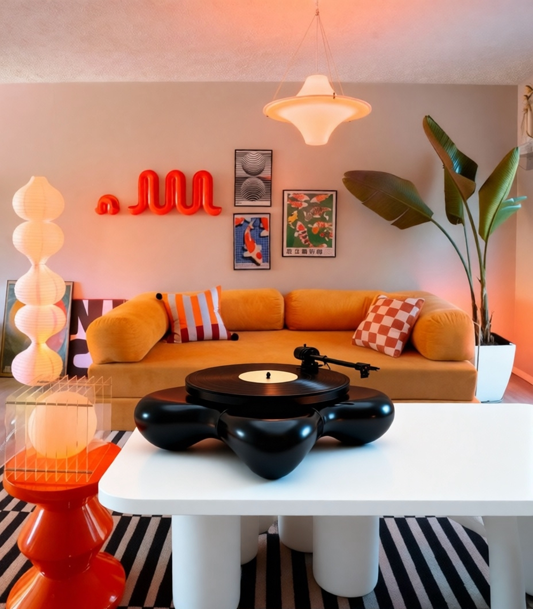
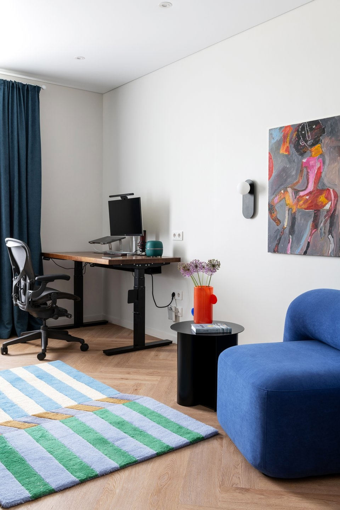
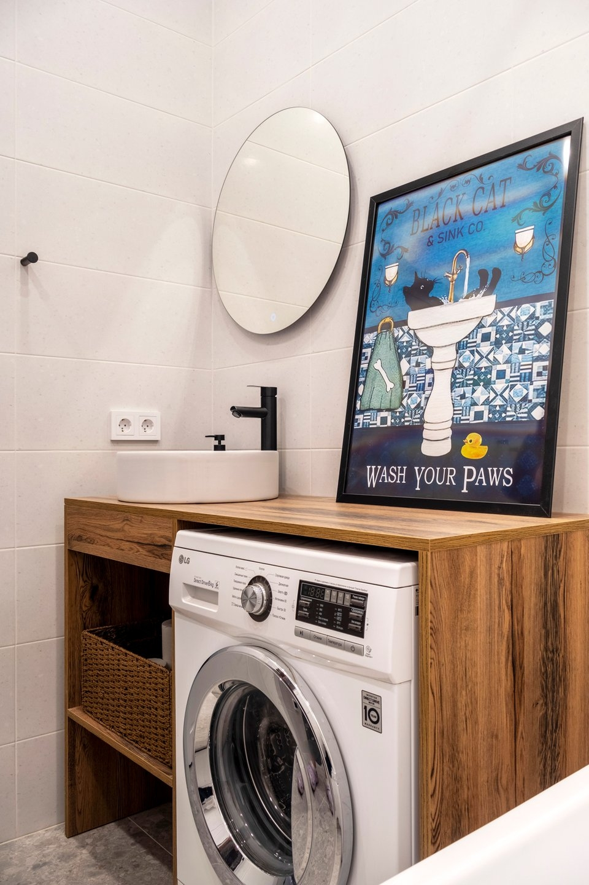
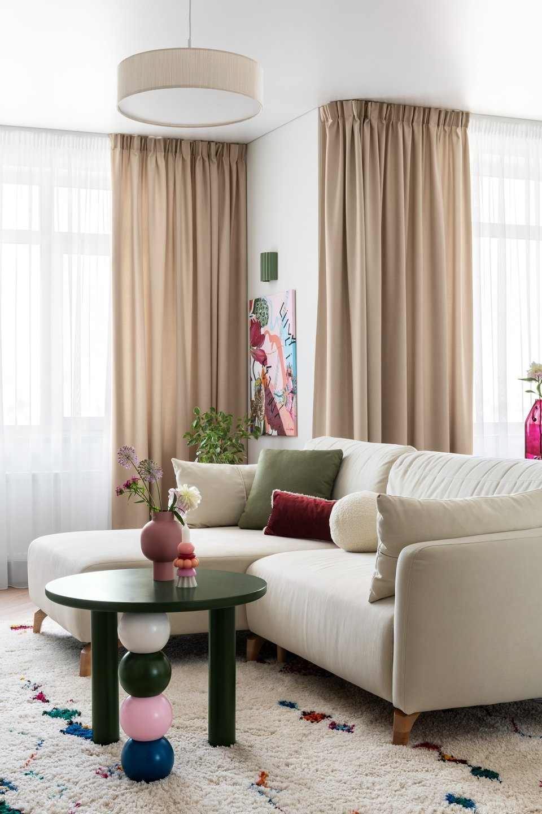

Обустройство стильного интерьера начинается с грамотного планирования дизайна пространства. Как же правильно внедрять дофамин декор в интерьер? Акцент в ремонте помогает дизайнерам расставить приоритеты, добавить в помещение индивидуальность. Разберемся, почему дофаминовый декор стал популярен и как воплотить его в квартире.
Н1: Как не переборщить с новым трендом на дофаминовый декор при обустройстве квартиры

Н2: Что такое дофаминовый декор и как он выглядит
Дофаминовый декор - это новый тренд интерьеров в коротких видео. В таком пространстве чаще всего используют:
- насыщенные яркие или пастельные цвета;
- округлые формы;
- приятные на ощупь материалы;
- игрушечность и театральность в декоре.
Это противоположность строгому минимализму. Здесь нет симметрии и сдержанности. Дизайнерские акценты создают ощущение беззаботности и уюта. Их легко добавить в интерьер и так же легко забрать при следующем переезде..
НЗ: Как цвет делает интерьер дофаминовым
Каждый оттенок декора работает как триггер воспоминаний. Например:
- Желтый цвет пробуждает воспоминания о солнечных днях, о пляже.
- Розовый переносит в беззаботное детство, напоминает о сладостях.
- Голубой акцент ассоциируется с волнами и свежестью.
- Зеленый успокаивает, создаёт образ уютного сада, где можно расслабиться и помечтать.
- Фиолетовый напоминает переливы заката, кристаллы на украшениях.
Цветовая палитра становится языком общения между пространством и его обитателем - вызывает эмоции и создает особое настроение.
НЗ: Почему в дофаминовом декоре странные формы
Формы в дофаминовом декоре как будто придуманы детьми: волны, пузыри, обнимательные изгибы. Кресла напоминают зефир или плюшевых монстров. Зеркала выглядят так, будто их рамы поплыли от солнца. Ковры как лужицы, облака или пятна краски. Всё немного странное, но уютное и теплое. Вещи хочется трогать и рассматривать. Они создают особую атмосферу в пространстве и помогают отвлечься от повседневности.

НЗ: Важны ли тактильные ощущения при выборе декора
Материалы в дофаминовом декоре отвечают за тактильное удовольствие.
Бархатные подушки, пледы напоминают плюшевых зверей, фигурные проигрыватели винила из глянцевого акрила как леденцы.
Разные материалы собираются в одном месте.
Н2: Зачем нужен дофаминовый декор
Яркий интерьер работает как эмоциональный якорь и антидот от выгорания. Длительное пребывание дома, усталость от визуально «стерильных» пространств привели к потребности в более живой, поддерживающей среде. Последние 6 лет люди не воспринимают дом исключительно как функциональное пространство. Они начали относиться к нему как к месту восстановления и эмоциональной подпитки. Интерьер стал частью заботы о себе и инструментом снижения ежедневного стресса. Даже небольшие изменения могут заметно повлиять на эмоциональное восприятие пространства.Когда зима длится полгода, солнца всегда не хватает, хочется как-то искусственно создать это солнце у себя дома для душевного равновесия. Согласно исследованиям нейробиологов, яркие, неожиданные акценты стимулируют мозг, повышая настроение и продуктивность, что актуально при коротком световом дне.
НЗ: Как отличить дофаминовый декор от просто яркого
В ярком интерьере вещи часто выбираются только ради моды или эффектности. Они привлекают внимание цветом, создают визуальное впечатление, радуют глаз, но не вызывают эмоцию.
Дофаминовые вещи вызывают эмоциональный отклик именно у тебя. Это могут быть предметы с историей, арт-объекты, винтаж, тактильно приятные материалы или неожиданные детали. Здесь нет универсальных сочетаний. То, что работает для одного человека, может быть абсолютно нейтральным для другого. Поэтому ключевым инструментом становится не тренд, а индивидуальная реакция. Настоящий дофаминовый интерьер не просто выглядит интересно, он вызывает эмоциональную реакцию: хочется улыбнуться и расслабиться.
Н2: Почему дизайн подходит для съемной квартиры:
- не нужно делать ремонт и выбрасывать старый диван
- детали можно менять по настроению
- создаёт атмосферу счастья и ламповости
- помогает быстрее привыкнуть к новому месту помогает выразить индивидуальность через пространство



НЗ: С чего начать внедрение дофаминового стиля
- Начни с текстиля, который видишь каждый день: подушки, плед, ковер, полотенце. Он добавит атмосферности даже в интерьер с нейтральной обстановкой.
- Добавь комнатные растения в дизайн помещений. Они сделают пространство более живым.
- Попробуй диффузоры. Пряные, цитрусовые, ягодные выбирай аромат под зону в интерьере и настроение улучшится.
- Включай музыку. Музыкально сопровождение вызывает положительные эмоции
- Замени серую посуду на яркую и смешивай тарелки с разными узорами.
Н2: Как не переборщить с дофаминовым декором: практические советы
Между серостью и яркостью можно найти золотую середину. Нейтральная база сочетается с яркими акцентами, а интерьер становится гибким: достаточно заменить подушки, постеры или абажур, чтобы полностью поменять настроение комнаты. Можно выделить цветные зоны в спокойном пространстве или выбрать умеренный максимализм. Начни с малых акцентов, 2-3 ярких элемента многофункциональных предмета в комнате.
Н2: ИТОГ
Все мы постоянно меняемся и хотели бы, чтобы интерьер был комфортным и отражал индивидуальность. Грамотный подбор ярких акцентов, тактильно приятных материалов и необычных форм поможет преобразить пространство. А декоративные элементы помогут менять дизайн квартиры без затрат, поддерживая нужное настроение.